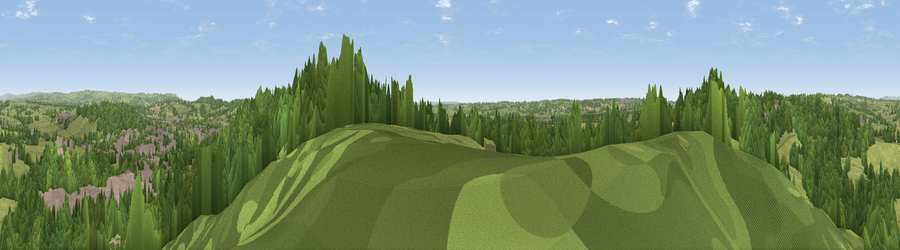

Viewpoint near Boundary
#24165 in England · top 34% of its area beats it · near BoundaryWhere it is
The exact computed spot (SJ 98825 42025). Click the marker for map links.
The view, rendered

A 360° render of this exact spot computed from the terrain model, tree cover and land cover — summer colours, afternoon light, calibrated against photographs of famous viewpoints. Real trees, hedges and buildings will differ in detail.
The panorama
Grey silhouette: terrain skyline in each direction (720 bearings, Earth curvature and refraction included). Dashed green: skyline with trees (+15 m) and buildings (+8 m) as obstacles. Blue strip: how far the ground is visible on each bearing.
Where the view opens
Wedge length = distance to the farthest visible ground on that bearing (vegetation-aware). Rings at 10, 25 and 50 km.
What fills the view
45% woodland · 40% grassland · 10% built-up · 5% cropland
Angular shares of the visible panorama (visual magnitude), not map area. Landscape diversity 0.48 (0–1 Shannon).
Key numbers
More beautiful places nearby
The staircase of upgrades: each row has a higher view potential than everything closer. Driving times are estimates from straight-line distance, calibrated against real road routing — check an actual route before setting out.
| Place | Direction | Drive | Score |
|---|---|---|---|
| Viewpoint near Boundary | ESE · 0 km | ~1 min | 48.9 |
| Viewpoint near Huntley | ESE · 1 km | ~2 min | 50.9 |
| Viewpoint near Cheadle | E · 4 km | ~10 min | 61.0 |
| Viewpoint near Oakamoor | ENE · 8 km | ~16 min | 62.9 |
| Viewpoint near Cauldon Lowe | ENE · 11 km | ~21 min | 71.9 |
| Viewpoint near Wootton | ENE · 11 km | ~22 min | 74.8 |
| Bignall Hill | WNW · 19 km | ~33 min | 75.2 |
| Tissington Hill | ENE · 19 km | ~33 min | 75.5 |
52.97557, -2.01895 · source: screening · position refined by local search. Computed location — check access rights before visiting.